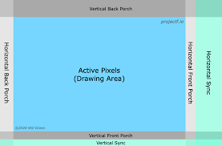
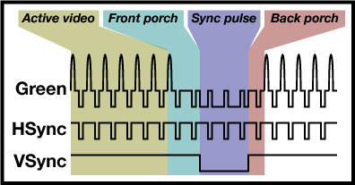

Lab Notes - Introductions
The documentation is currently under construction and is being developed along with a live streaming narrative it is very much a work in progress, you can already find some interesting stuff in the examples section.
Setup
Ice LogicDeck setup BlackCrab Firmware
IceLogicBus Hardware
The IceLogicBus (ILB) Hardware consists of modular tiles fitted to the main carrier board as required for the given development project. Onboard the main ILB carrier board is the FPGA and power-train (USB-C-PD/XT30). Mounted on top of this is the BlackEdge Controller (BEC) board with microcontroller, SPI Flash, blades and connectors.
Connectivity & Power
The BEC has a USB-C connector configured as a USB CDC serial device running QSPIMEM under BlackCrab Rust based firmware . This allows programming of the microcontroller, FPGA and flash, along with uart and monitoring features depending on the required mode.
There is a second Usb-C (Usb-PD) Connector on the ILB which operates as a high Power over Usb delivery system operating from 5 to 20 volts in order to be able to power a large range of modular tiles from simple led drivers through to small motor and power-train devices. An auxiliary XT30 power connector is also provided for the more extreme power delivery requirements across the tiles from sources such as batteries etc.
Operating Modes
Mode selection is achieved via the 'Mode' button, if depressed on power up it switches the device into Usb-DFU mode which enables the firmware to be updated from the PC host over Usb. Normal startup places the device into QSPIMEM. In QSPIMEM mode the device intelligently listens to Usb traffic for new ILB applications, FPGA updates whilst concurrently relaying monitor, logging and error information.
More advanced functionality can be achieved over USB via _QSPIMEM including uploads, downloads and data transfers.
Status and feedback
There is an RGB led on board which can provide feedback and status of the board's mode and operation. In normal mode this is unlit. if and application or FPGA image is uploaded it will flicker green and amber and then extinguish on successful completion. If it remains red it will normally be due to either a hardware fault or bad FPGA synthesis. A third state is possible when the FPGA synthesis drives the blue part of the led for example in a blinky test, the colour will the blink blue. The BEC also has an RGB led which is normally green (power), the other leds can be used to indicate activity and status from the BlackCrab firmware.
There is also a 1.27mm pitch 10pin, Arm SWD debug connector if you need to debug what is BlackCrab running on the BEC.
Setting up IceLogicBus - Drivers and firmware:
QSPIMEM
QSPIMEM is a simple communications protocol that enables Host<->BlackIce<->FPGA transfers and communications. This can be as sinmple as programing the flash or FPGA image or reading and rwriting memory etc..
USB-CDC
Power-Train
Tools
Installing the HDL tools:
Yosys
Amaranth
BlackCrab
mystorm
The mystorm package contains all of the tools and systhesis support for the mystorm hardware including Amaranth board support and PCF filwes for Verilog
Tiles
Led test example
We start with a standard tile resource abstraction to work with a protoboard that I have added 12 LEDS t0. We then run some basic Amaranth python HDL to exercise the leds
from amaranth import *
from amaranth.build import *
from IceLogicDeck import *
leds12_tile = [
Resource("leds12", 0,
Subsignal("leds", Pins("1 2 3 4 5 6 7 8 9 10 11 12", dir="o", conn=("tile",2)), Attrs(IO_STANDARD="SB_LVCMOS")))
]
class LEDTileTest(Elaboratable):
def elaborate(self, platform):
leds12 = Cat([l for l in platform.request("leds12")])
timer = Signal(38)
m = Module()
m.d.sync += timer.eq(timer + 1)
m.d.comb += leds12.eq(timer[-15:-1])
return m
if __name__ == "__main__":
platform = IceLogicDeckPlatform()
platform.add_resources(leds12_tile)
platform.build(LEDTileTest(), do_program=True)
Blinky
Simple Amaranth blinky using the onboard LED
Simple led blinky example using the blue part of the rgb led on the Ice LogicDeck.
from amaranth import *
from ..boards.icelogicbus import *
class Blink(Elaboratable):
def elaborate(self, platform):
led = platform.request("led")
# led = platform.request("tx")
timer = Signal(24)
m = Module()
m.d.sync += timer.eq(timer + 1)
m.d.comb += led.eq(timer[-1])
return m
def synth():
platform = IceLogicBusPlatform()
platform.build(Blink(), do_program=True)
if __name__ == "__main__":
synth()
Seven Segment Tile
Here is the Top level AHDL Seven_segment.py
Shown below is the Tile example class example we derived from the BlackIce Mx nMigen examples for the seven segment tile.
from amaranth import *
from amaranth.hdl.ast import Rose
from ..boards.icelogicbus import *
from ..tiles.seven_seg_tile import Pins
from ..core.sevensegdecoder import SevenSegDecoder
TILE = 3
segtile = "seven_seg_tile"
class SevenSegExample(Elaboratable):
def elaborate(self, platform):
m = Module()
m.submodules.seven = seven = SevenSegDecoder()
seg_pins = platform.request("seven_seg_tile")
leds7 = Cat([seg_pins.a, seg_pins.b, seg_pins.c, seg_pins.d, seg_pins.e, seg_pins.f, seg_pins.g])
timer = Signal(40)
m.d.sync += timer.eq(timer + 1)
m.d.comb += [
leds7.eq(seven.leds)
]
for i in range(3):
m.d.comb += seg_pins.ca[i].eq(timer[17:19] == i)
with m.If(seg_pins.ca[i]):
m.d.comb += seven.val.eq(timer[((i - 3) * 4) - 5:((i - 3) * 4) - 1])
return m
def synth():
platform = IceLogicBusPlatform()
platform.add_tile(segtile, TILE, Pins, invert=True)
platform.build(SevenSegExample(), do_program=True)
if __name__ == "__main__":
synth()
The Seven Segment Tile Driver
The tile driver abstracts the tile resource pinouts handling the low level Hex->7-segment encoding.
from typing import List
from amaranth import *
from amaranth.build import *
from ..core.sevensegdecoder import SevenSegDecoder
Pins = {"3 2 1":("ca","o"),
"4":("g","o"),
"5":("f","o"),
"6":("a","o"),
"7":("e","o"),
"8":("b","o"),
"9":("dp","o"),
"10":("d","o"),
"12":("c","o")}
class SevenSegmentTile(Elaboratable):
def __init__(self):
self.leds = Signal(7)
self.ca = Signal(3)
self.val = Signal(12)
def elaborate(self, platform):
m = Module()
m.submodules.seven = seven = SevenSegDecoder()
m.d.comb += self.leds.eq(seven.leds)
timer = Signal(19)
m.d.sync += timer.eq(timer + 1)
for i in range(3):
m.d.comb += self.ca[i].eq(timer[17:19] == i)
with m.If(self.ca[2]):
m.d.comb += seven.val.eq(self.val[8:])
with m.If(self.ca[1]):
m.d.comb += seven.val.eq(self.val[4:8])
with m.If(self.ca[0]):
m.d.comb += seven.val.eq(self.val[:4])
return m
Audio and Video Tile
VGA VGA Driver and Timings AHDL
Pins= {"1" : ("hs", "o"),
"2" : ("vs", "o"),
"11 7 6" : ("red", "o"),
"12 10 5 4" : ("green", "o"),
"3 9 8" : ("blue","o")}
Audio
Video
How a VGA frame is divided

The VGA Signals

VGA Example AHDL
from amaranth import *
from ..boards.icelogicbus import *
from ..tiles.vga_tile import Pins
from ..core.vga import VGADriver, VGATestPattern, VGATiming, vga_timings
from ..core.pll import PLL
TILE = 1
vga_tile = "vga_tile"
class VGAExample(Elaboratable):
def __init__(self,
timing: VGATiming, # VGATiming class
xadjustf=0, # adjust -3..3 if no picture
yadjustf=0): # or to fine-tune f
# Configuration
self.timing = timing
self.xadjustf = xadjustf
self.yadjustf = yadjustf
def elaborate(self, platform):
m = Module()
clk_in = platform.request(platform.default_clk, dir='-')[0]
# Clock generator.
m.domains.sync = cd_sync = ClockDomain("sync")
m.d.comb += ClockSignal().eq(clk_in)
# Create a Pll to generate the pixel clock
m.submodules.pll = pll = PLL(freq_in_mhz=int(platform.default_clk_frequency / 1000000),
freq_out_mhz=int(self.timing.pixel_freq / 1000000),
domain_name="pixel")
# Add the pixel clock domain to the module, and connect input clock
m.domains.pixel = cd_pixel = pll.domain
m.d.comb += pll.clk_pin.eq(clk_in)
platform.add_clock_constraint(cd_pixel.clk, self.timing.pixel_freq)
# Create VGA instance with chosen timings
m.submodules.vga = vga = VGADriver(
self.timing,
bits_x=16, # Play around with the sizes because sometimes
bits_y=16 # a smaller/larger value will make it pass timing.
)
# Create test pattern
m.submodules.pattern = pattern = VGATestPattern(vga)
# enable the clock and test signal
m.d.comb += vga.i_clk_en.eq(1)
# Grab our VGA Tile resource
av_tile = platform.request(vga_tile)
# Hook it up to the VGA instance
m.d.comb += [
av_tile.red.eq(vga.o_vga_r[5:]),
av_tile.green.eq(vga.o_vga_g[4:]),
av_tile.blue.eq(vga.o_vga_b[5:]),
av_tile.hs.eq(vga.o_vga_hsync),
av_tile.vs.eq(vga.o_vga_vsync)
]
return m
def synth():
platform = IceLogicBusPlatform()
platform.add_tile(vga_tile, TILE, Pins)
platform.build(VGAExample(timing=vga_timings['1024x768@60Hz']), do_program=True)
if __name__ == "__main__":
synth()
VGA Driver and Timings AHDL
from typing import NamedTuple
from amaranth import *
from amaranth.build import *
# Abstracts the VGA Frame timing sections
class VGATiming(NamedTuple):
x: int
y: int
refresh_rate: float
pixel_freq: int
h_front_porch: int
h_sync_pulse: int
h_back_porch: int
v_front_porch: int
v_sync_pulse: int
v_back_porch: int
# Generates a VGA picture from sequential bitmap data from pixel clock
# synchronous FIFO.
#
# The pixel data in i_r, i_g, and i_b registers
# should be present ahead of time.
#
# Signal 'o_fetch_next' is set high for 1 'pixel' clock
# period as soon as current pixel data is consumed.
# The FIFO should be fast enough to fetch new data
# for the new pixel.
class VGADriver(Elaboratable):
def __init__(self, timing: VGATiming,
bits_x = 10, # should fit resolution_x + hsync_front_porch + hsync_pulse + hsync_back_porch
bits_y = 10, # should fit resolution_y + vsync_front_porch + vsync_pulse + vsync_back_porch
):
# ClockEnable and Colour Pixel input signals
self.i_clk_en = Signal()
self.i_r = Signal(8)
self.i_g = Signal(8)
self.i_b = Signal(8)
# Frame Buffer timing signals
self.o_fetch_next = Signal()
self.o_beam_x = Signal(bits_x)
self.o_beam_y = Signal(bits_y)
# Output Blanking signals
self.o_vga_vblank = Signal()
self.o_vga_blank = Signal()
self.o_vga_de = Signal()
# Output signals for driving DAC/SYNC
self.o_vga_r = Signal(8)
self.o_vga_g = Signal(8)
self.o_vga_b = Signal(8)
self.o_vga_hsync = Signal()
self.o_vga_vsync = Signal()
# Timing constants
self.timing = timing
# Configuration
self.bits_x = bits_x
self.bits_y = bits_y
def elaborate(self, platform: Platform) -> Module:
m = Module()
# Constants
C_hblank_on = C(self.timing.x - 1, unsigned(self.bits_x))
C_hsync_on = C(self.timing.x + self.timing.h_front_porch - 1, unsigned(self.bits_x))
C_hsync_off = C(self.timing.x + self.timing.h_front_porch + self.timing.h_sync_pulse - 1, unsigned(self.bits_x))
C_hblank_off = C(self.timing.x + self.timing.h_front_porch + self.timing.h_sync_pulse + self.timing.h_back_porch - 1, unsigned(self.bits_x))
C_frame_x = C_hblank_off
# frame x = 640 + 16 + 96 + 48 = 800
C_vblank_on = C(self.timing.y - 1, unsigned(self.bits_y))
C_vsync_on = C(self.timing.y + self.timing.v_front_porch - 1, unsigned(self.bits_y))
C_vsync_off = C(self.timing.y + self.timing.v_front_porch + self.timing.v_sync_pulse - 1, unsigned(self.bits_y))
C_vblank_off = C(self.timing.y + self.timing.v_front_porch + self.timing.v_sync_pulse + self.timing.v_back_porch - 1, unsigned(self.bits_y))
C_frame_y = C_vblank_off
# frame y = 480 + 10 + 2 + 33 = 525
# refresh rate = pixel clock / (frame x * frame y) = 25 MHz / (800 * 525) = 59.52 Hz
# Internal signals
R_hsync = Signal()
R_vsync = Signal()
R_disp = Signal() # disp == not blank
R_disp_early = Signal()
R_vdisp = Signal()
R_blank_early = Signal()
R_vblank = Signal()
R_fetch_next = Signal()
CounterX = Signal(self.bits_x)
CounterY = Signal(self.bits_y)
R_blank = Signal()
with m.If(self.i_clk_en):
with m.If(CounterX == C_frame_x):
m.d.pixel += CounterX.eq(0)
with m.If(CounterY == C_frame_y):
m.d.pixel += CounterY.eq(0)
with m.Else():
m.d.pixel += CounterY.eq(CounterY + 1)
with m.Else():
m.d.pixel += CounterX.eq(CounterX + 1)
m.d.pixel += R_fetch_next.eq(R_disp_early)
with m.Else():
m.d.pixel += R_fetch_next.eq(0)
m.d.comb += [
self.o_beam_x.eq(CounterX),
self.o_beam_y.eq(CounterY),
self.o_fetch_next.eq(R_fetch_next),
]
# Generate sync and blank.
with m.If(CounterX == C_hblank_on):
m.d.pixel += [
R_blank_early.eq(1),
R_disp_early.eq(0)
]
with m.Elif(CounterX == C_hblank_off):
m.d.pixel += [
R_blank_early.eq(R_vblank),
R_disp_early.eq(R_vdisp)
]
with m.If(CounterX == C_hsync_on):
m.d.pixel += R_hsync.eq(1)
with m.Elif(CounterX == C_hsync_off):
m.d.pixel += R_hsync.eq(0)
with m.If(CounterY == C_vblank_on):
m.d.pixel += [
R_vblank.eq(1),
R_vdisp.eq(0)
]
with m.Elif(CounterY == C_vblank_off):
m.d.pixel += [
R_vblank.eq(0),
R_vdisp.eq(1)
]
with m.If(CounterY == C_vsync_on):
m.d.pixel += R_vsync.eq(1)
with m.Elif(CounterY == C_vsync_off):
m.d.pixel += R_vsync.eq(0)
m.d.pixel += R_blank.eq(R_blank_early)
m.d.pixel += R_disp.eq(R_disp_early)
m.d.comb += [
self.o_vga_r.eq(self.i_r),
self.o_vga_g.eq(self.i_g),
self.o_vga_b.eq(self.i_b),
self.o_vga_hsync.eq(R_hsync),
self.o_vga_vsync.eq(R_vsync),
self.o_vga_blank.eq(R_blank),
self.o_vga_de.eq(R_disp),
]
return m
# Generates a VGA Test Pattern
class VGATestPattern(Elaboratable):
def __init__(self, vga: VGADriver):
self.vga = vga
def elaborate(self, platform: Platform) -> Module:
W = Signal(8)
A = Signal(8)
T = Signal(8)
Z = Signal(6)
m = Module()
# Test pattern fundamentals
m.d.comb += [
A.eq(Mux(
(self.vga.o_beam_x[5:8] == 0b010) & (self.vga.o_beam_y[5:8] == 0b010),
0xFF, 0)),
W.eq(Mux(
(self.vga.o_beam_x[:8] == self.vga.o_beam_y[:8]),
0xFF, 0)),
Z.eq(Mux(
(self.vga.o_beam_y[3:5] == ~(self.vga.o_beam_x[3:5])),
0xFF, 0)),
T.eq(Repl(self.vga.o_beam_y[6], len(T))),
]
# Mux Emit rgb test pattern pixels unless within blanking period
with m.If(self.vga.o_vga_blank):
m.d.pixel += [
self.vga.i_r.eq(0),
self.vga.i_g.eq(0),
self.vga.i_b.eq(0),
]
with m.Else():
m.d.pixel += [
self.vga.i_r.eq((Cat(0b00, self.vga.o_beam_x[:6] & Z) | W) & (~A)),
self.vga.i_g.eq(((self.vga.o_beam_x[:8] & T) | W) & (~A)),
self.vga.i_b.eq(self.vga.o_beam_x[:8] | W | A),
]
return m
vga_timings = {
'640x350@70Hz': VGATiming(
x = 640,
y = 350,
refresh_rate = 70.0,
pixel_freq = 25_175_000,
h_front_porch = 16,
h_sync_pulse = 96,
h_back_porch = 48,
v_front_porch = 37,
v_sync_pulse = 2,
v_back_porch = 60),
'640x350@85Hz': VGATiming(
x = 640,
y = 350,
refresh_rate = 85.0,
pixel_freq = 31_500_000,
h_front_porch = 32,
h_sync_pulse = 64,
h_back_porch = 96,
v_front_porch = 32,
v_sync_pulse = 3,
v_back_porch = 60),
'640x400@70Hz': VGATiming(
x = 640,
y = 400,
refresh_rate = 70.0,
pixel_freq = 25_175_000,
h_front_porch = 16,
h_sync_pulse = 96,
h_back_porch = 48,
v_front_porch = 12,
v_sync_pulse = 2,
v_back_porch = 35),
'640x400@85Hz': VGATiming(
x = 640,
y = 400,
refresh_rate = 85.0,
pixel_freq = 31_500_000,
h_front_porch = 32,
h_sync_pulse = 64,
h_back_porch = 96,
v_front_porch = 1,
v_sync_pulse = 3,
v_back_porch = 41),
'640x480@60Hz': VGATiming(
x = 640,
y = 480,
refresh_rate = 60.0,
pixel_freq = 25_175_000,
h_front_porch = 16,
h_sync_pulse = 96,
h_back_porch = 48,
v_front_porch = 10,
v_sync_pulse = 2,
v_back_porch = 33),
'720x400@85Hz': VGATiming(
x = 720,
y = 400,
refresh_rate = 85.0,
pixel_freq = 35_500_000,
h_front_porch = 36,
h_sync_pulse = 72,
h_back_porch = 108,
v_front_porch = 1,
v_sync_pulse = 3,
v_back_porch = 42),
'768x576@60Hz': VGATiming(
x = 758,
y = 576,
refresh_rate = 60.0,
pixel_freq = 34_960_000,
h_front_porch = 24,
h_sync_pulse = 80,
h_back_porch = 104,
v_front_porch = 1,
v_sync_pulse = 3,
v_back_porch = 17),
'768x576@72Hz': VGATiming(
x = 758,
y = 576,
refresh_rate = 72.0,
pixel_freq = 42_930_000,
h_front_porch = 32,
h_sync_pulse = 80,
h_back_porch = 112,
v_front_porch = 1,
v_sync_pulse = 3,
v_back_porch = 21),
'768x576@75Hz': VGATiming(
x = 758,
y = 576,
refresh_rate = 75.0,
pixel_freq = 45_510_000,
h_front_porch = 40,
h_sync_pulse = 80,
h_back_porch = 120,
v_front_porch = 1,
v_sync_pulse = 3,
v_back_porch = 22),
'800x600@60Hz': VGATiming(
x = 800,
y = 600,
refresh_rate = 60.0,
pixel_freq = 40_000_000,
h_front_porch = 40,
h_sync_pulse = 128,
h_back_porch = 88,
v_front_porch = 1,
v_sync_pulse = 4,
v_back_porch = 23),
'848x480@60Hz': VGATiming(
x = 848,
y = 480,
refresh_rate = 60.0,
pixel_freq = 33_750_000,
h_front_porch = 16,
h_sync_pulse = 112,
h_back_porch = 112,
v_front_porch = 6,
v_sync_pulse = 8,
v_back_porch = 23),
'1024x768@60Hz': VGATiming(
x = 1024,
y = 768,
refresh_rate = 60.0,
pixel_freq = 65_000_000,
h_front_porch = 24,
h_sync_pulse = 136,
h_back_porch = 160,
v_front_porch = 3,
v_sync_pulse = 6,
v_back_porch = 29),
'1152x864@60Hz': VGATiming(
x = 1152,
y = 864,
refresh_rate = 60.0,
pixel_freq = 81_620_000,
h_front_porch = 64,
h_sync_pulse = 120,
h_back_porch = 184,
v_front_porch = 1,
v_sync_pulse = 3,
v_back_porch = 27),
'1280x720@60Hz': VGATiming(
x = 1280,
y = 720,
refresh_rate = 60.0,
pixel_freq = 74_250_000,
h_front_porch = 110,
h_sync_pulse = 40,
h_back_porch = 220,
v_front_porch = 5,
v_sync_pulse = 5,
v_back_porch = 20),
'1280x768@60Hz': VGATiming(
x = 1280,
y = 768,
refresh_rate = 60.0,
pixel_freq = 79_500_000,
h_front_porch = 64,
h_sync_pulse = 128,
h_back_porch = 192,
v_front_porch = 3,
v_sync_pulse = 7,
v_back_porch = 20),
'1280x768@60Hz CVT-RB': VGATiming(
x = 1280,
y = 768,
refresh_rate = 60.0,
pixel_freq = 68_250_000,
h_front_porch = 48,
h_sync_pulse = 32,
h_back_porch = 80,
v_front_porch = 3,
v_sync_pulse = 7,
v_back_porch = 12),
'1280x800@60Hz': VGATiming(
x = 1280,
y = 800,
refresh_rate = 60.0,
pixel_freq = 83_500_000,
h_front_porch = 72,
h_sync_pulse = 128,
h_back_porch = 200,
v_front_porch = 3,
v_sync_pulse = 6,
v_back_porch = 22),
'1280x800@60Hz CVT-RB': VGATiming(
x = 1280,
y = 800,
refresh_rate = 60.0,
pixel_freq = 71_000_000,
h_front_porch = 48,
h_sync_pulse = 32,
h_back_porch = 80,
v_front_porch = 3,
v_sync_pulse = 6,
v_back_porch = 14),
'1280x1024@60Hz': VGATiming(
x = 1280,
y = 1024,
refresh_rate = 60.0,
pixel_freq = 108e6,
h_front_porch = 48,
h_sync_pulse = 112,
h_back_porch = 248,
v_front_porch = 1,
v_sync_pulse = 3,
v_back_porch = 38),
'1366x768@60Hz': VGATiming(
x = 1366,
y = 768,
refresh_rate = 60.0,
pixel_freq = 85_500_000,
h_front_porch = 70,
h_sync_pulse = 143,
h_back_porch = 213,
v_front_porch = 3,
v_sync_pulse = 3,
v_back_porch = 24),
'1920x1080@30Hz': VGATiming(
x = 1920,
y = 1080,
refresh_rate = 30.0,
pixel_freq = 148_500_000//2,
h_front_porch = 88,
h_sync_pulse = 44,
h_back_porch = 148,
v_front_porch = 4,
v_sync_pulse = 5,
v_back_porch = 36),
'1920x1080@30Hz CVT-RB': VGATiming(
x = 1920,
y = 1080,
refresh_rate = 30.0,
pixel_freq = 73_000_000,
h_front_porch = 48,
h_sync_pulse = 32,
h_back_porch = 80,
v_front_porch = 3,
v_sync_pulse = 5,
v_back_porch = 9),
'1920x1080@30Hz CVT-RB2': VGATiming(
x = 1920,
y = 1080,
refresh_rate = 30.0,
pixel_freq = 70_208_000,
h_front_porch = 8,
h_sync_pulse = 32,
h_back_porch = 40,
v_front_porch = 3,
v_sync_pulse = 8,
v_back_porch = 6),
'1920x1080@60Hz': VGATiming(
x = 1920,
y = 1080,
refresh_rate = 60.0,
pixel_freq = 148_500_000,
h_front_porch = 88,
h_sync_pulse = 44,
h_back_porch = 148,
v_front_porch = 4,
v_sync_pulse = 5,
v_back_porch = 36),
}
Code we ported from Lawrie which in turn was built on Guztech's VGA for ULX3s
Blades
Blades are Tiny expansion boards that fit into SDCard like sockets. They are gerat for small connector less applications like adding Wifi, IMUs, QSPI Flash/RAM or even fpc connected SPI Oleds/Lcds.
Each Blade has up to 6 Programable IOs connected directly to the FPGA and can therefor be used for any synthesised digital logic function.
LEDBlade
The LED Blade sports 6 leds two red, amber and green and can be used for indicating states or patterns as required. Below shows an example of using the led blade.
from amaranth import *
from amaranth.build import *
from ..boards.icelogicbus import *
BLADE = 1
leds = "leds6"
class LedBlade(Elaboratable):
def elaborate(self, platform):
leds6 = Signal(6, reset = 0b1111)
leds6 = Cat([l for l in platform.request(leds)])
timer = Signal(23)
m = Module()
m.d.sync += timer.eq(timer + 1)
with m.If(timer[-1]):
m.d.sync += leds6.eq(Cat(leds6[1:6], ~leds6[0]))
return m
def synth():
platform = IceLogicBusPlatform()
platform.add_blade(leds, BLADE, {"1":("sig","o")})
platform.build(LedBlade(), do_program=True)
if __name__ == "__main__":
synth()
Reference
PLL
The FPGA boards have fixed frequency clocks as inputs generated externally.
Very often, we want to run part or all of our logic at a different clock speed.
This is where PLLs (Phase Locked Loop) enter the picture. It's a fundamental building block, present is most chips of some complexity, that can be configured to generate a clock with a wide range of frequencies.
The ICE40 HX4K FPGA on your board has 2 such PLLs.
PLL Example
from collections import namedtuple
import warnings
from amaranth import *
from amaranth.lib.cdc import ResetSynchronizer
from amaranth.cli import main
class PLL(Elaboratable):
"""
Instantiate the iCE40's phase-locked loop (PLL).
This uses the iCE40's SB_PLL40_PAD primitive in simple feedback
mode.
The reference clock is directly connected to a package pin. To
allocate that pin, request the pin with dir='-'; otherwise nMigen
inserts an SB_IO on the pin. E.g.,
clk_pin = platform.request('clk12', dir='-')
Because the PLL eats the external clock, that clock is not available
for other uses. So you might as well have the PLL generate the
default 'sync' clock domain.
This module also has a reset synchronizer -- the domain's reset line
is not released until a few clocks after the PLL lock signal is
good.
"""
def __init__(self, freq_in_mhz, freq_out_mhz, domain_name='sync'):
self.freq_in = freq_in_mhz
self.freq_out = freq_out_mhz
self.coeff = self._calc_freq_coefficients()
print(self.coeff)
self.clk_pin = Signal()
self.rst_pin = Signal()
self.domain_name = domain_name
self.domain = ClockDomain(domain_name)
self.ports = [
self.clk_pin,
self.domain.clk,
self.domain.rst,
]
self.locked = Signal()
def _calc_freq_coefficients(self):
# cribbed from Icestorm's icepll.
f_in, f_req = self.freq_in, self.freq_out
assert 16 <= f_in <= 100
assert 16 <= f_req <= 275
coefficients = namedtuple('coefficients', 'divr divf divq')
divf_range = 128 # see comments in icepll.cc
best_fout = float('inf')
for divr in range(16):
pfd = f_in / (divr + 1)
if 10 <= pfd <= 133:
for divf in range(divf_range):
vco = pfd * (divf + 1)
if 533 <= vco <= 1066:
for divq in range(1, 7):
fout = vco * 2 ** -divq
if abs(fout - f_req) < abs(best_fout - f_req):
best_fout = fout
best = coefficients(divr, divf, divq)
if best_fout != f_req:
warnings.warn(
f'PLL: requested {f_req} MHz, got {best_fout} MHz)',
stacklevel=3)
return best
def elaborate(self, platform):
pll_lock = Signal()
f_pfd = self.freq_in / (self.coeff.divr + 1);
if f_pfd < 17:
filt_range = 1
elif f_pfd < 26:
filt_range = 2
elif f_pfd < 44:
filt_range = 3
elif f_pfd < 66:
filt_range = 4
elif f_pfd < 101:
filt_range = 5
else:
filt_range = 6
print("filter range", filt_range)
pll = Instance("SB_PLL40_CORE", # "SB_PLL40_PAD" for up5k
p_FEEDBACK_PATH='SIMPLE',
p_DIVR=self.coeff.divr,
p_DIVF=self.coeff.divf,
p_DIVQ=self.coeff.divq,
p_FILTER_RANGE=filt_range,
##i_PACKAGEPIN=self.clk_pin, for up5k
i_REFERENCECLK=self.clk_pin,
i_RESETB=Const(1),
i_BYPASS=Const(0),
o_PLLOUTGLOBAL=ClockSignal(self.domain_name),
o_LOCK=pll_lock)
rs = ResetSynchronizer(~pll_lock | self.rst_pin, domain=self.domain_name)
m = Module()
m.submodules += [pll, rs]
m.d.comb += self.locked.eq(pll_lock)
return m
# There is no point in simulating this, but you can generate Verilog.
if __name__ == '__main__':
pll = PLL(12, 30)
main(pll, ports=pll.ports)
A more detailed explanation of the Ice40HX PLLs from the BlackIce II wiki